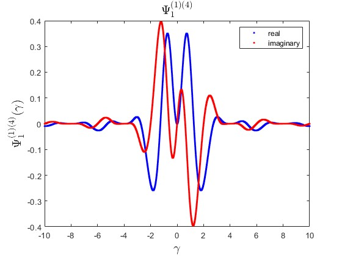
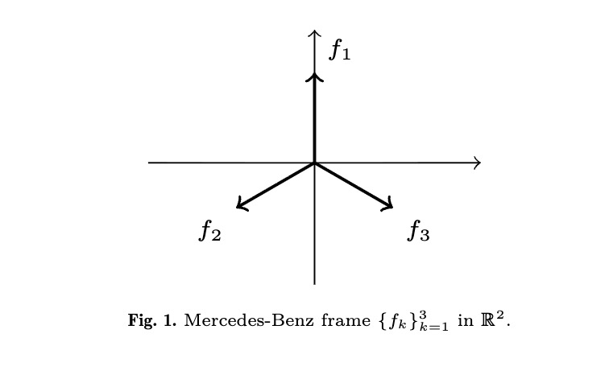
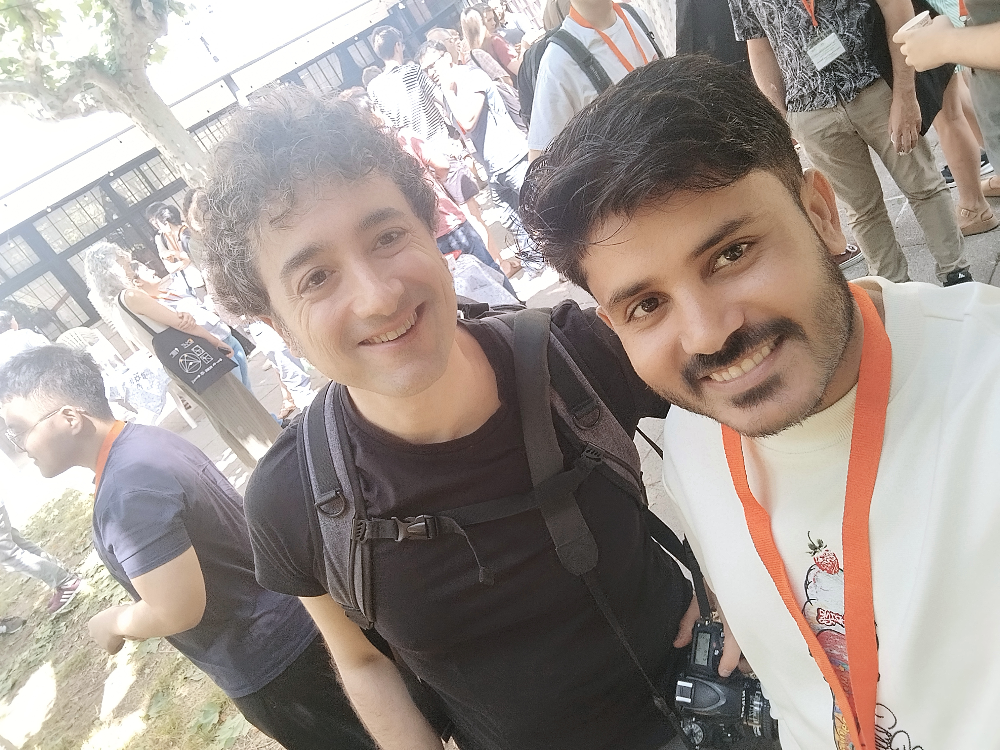
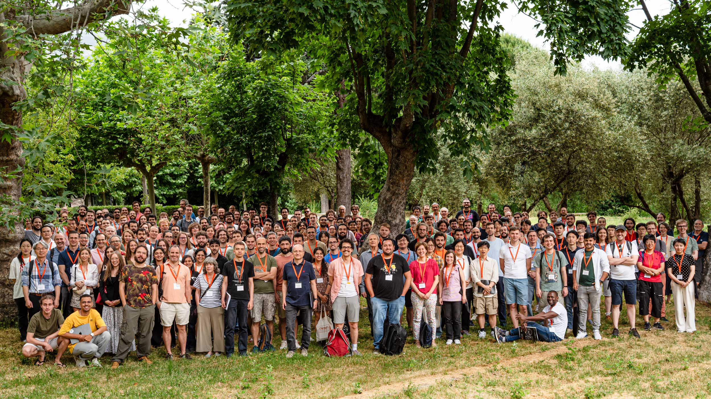
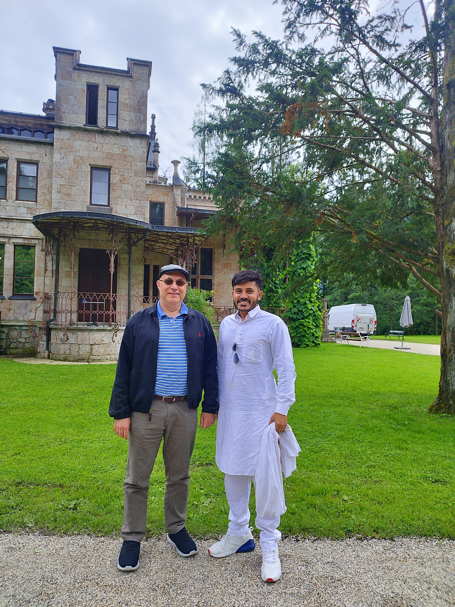
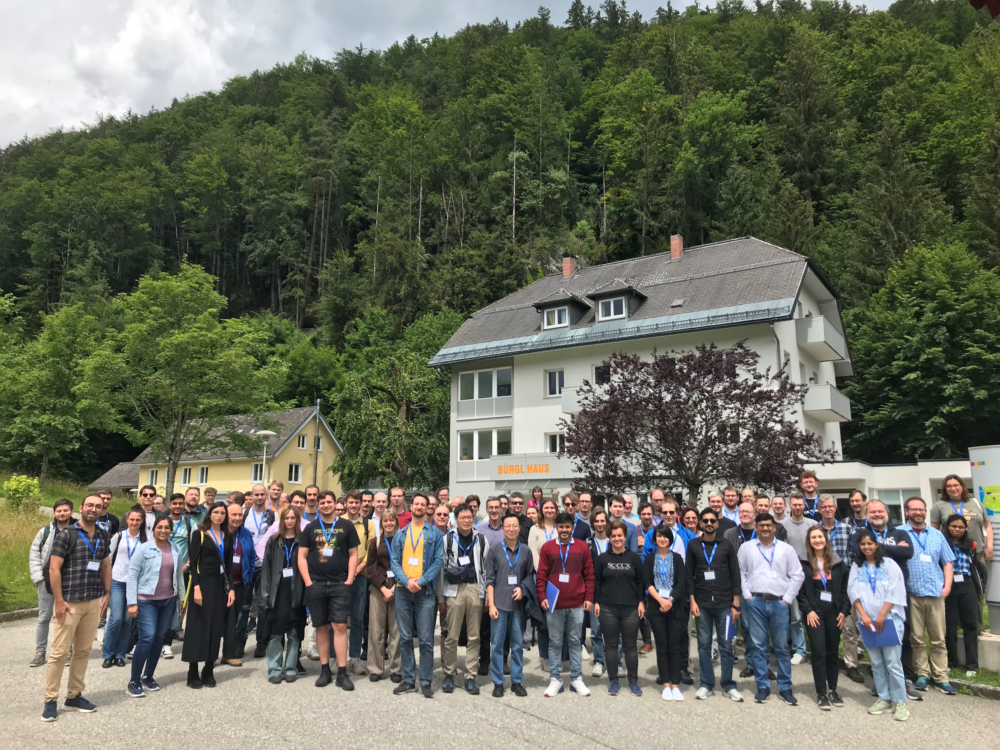

Applied harmonic analysis
Fourier analysis and operator methods for understanding structured signals and information.
Mathematics · Harmonic analysis · Frame theory
I study how signals can be represented, sampled, and recovered using tools from harmonic analysis, frame theory, and operator theory.
Postdoctoral Fellow · School of Mathematical Sciences, NISER Bhubaneswar
01 / Profile
I am a researcher in applied harmonic analysis, frame theory, wavelets, and dynamical sampling, currently serving as a Postdoctoral Fellow in the School of Mathematical Sciences at the National Institute of Science Education and Research (NISER), Bhubaneswar, India. My research investigates the mathematical foundations of frame theory on locally compact abelian (LCA) groups and develops analytical and computational methods for signal representation, sampling, and recovery. Working at the intersection of harmonic analysis, operator theory, and applied mathematics, I explore problems that arise in diffraction data analysis and related areas of modern mathematical science. My work has appeared in leading international SCIE-indexed journals, and I have collaborated with researchers from Kyushu University, the Technical University of Denmark, and RWTH Aachen University. I have also presented my research at several distinguished national and international conferences, and I continue to contribute to the advancement of contemporary mathematical analysis through work that bridges rigorous theory with scientific application.
02 / Research interests
03 / Research
Fourier analysis and operator methods for understanding structured signals and information.
Parseval frames, cyclic frames, and explicit constructions in locally compact abelian settings.
Sampling geometry, dynamical sampling, and the recovery of signals from incomplete measurements.
Wavelet frames, shearlets, and connections to data science, diffraction, and signal processing.
04 / Selected work
Published
Linear Algebra and its Applications, 728, 63–81 (2026).
DOI ↗Applied and Computational Harmonic Analysis, 74, 101708 (2025).
DOI ↗Under review
Journal of Mathematical Analysis and Applications (under review).
Bulletin des Sciences Mathématiques (under review).
Manuscripts in preparation
Manuscript in preparation.
Manuscript in preparation.
Manuscript in preparation.
05 / Conferences & workshops
Selected academic events, presentations, and research visits.
Presentations
Oral presentation · Institute of Mathematics of the Romanian Academy, Bucharest
Poster presentation · Strobl, Austria
Invited talk · IISER Mohali, India
Poster presentation · El Escorial, Spain
Workshops & visits
Joint research project · Kyushu University, Fukuoka, Japan
International conference · Strobl, Austria
Workshop · Harish-Chandra Research Institute, Prayagraj
Workshop · IIT Guwahati, India
06 / Academic path
Experience
Postdoctoral Fellow
Assistant Professor
Visiting Research Fellow · Kyushu University, Japan
Education
Ph.D. in Mathematics · Harmonic Analysis
M.Sc. in Mathematics & Computing
B.Sc. in Mathematics and Statistics
Awards and achievements
Joint Research Project at IMI, Kyushu University, Japan (May 5–18, 2026)
Institute Travel Grant, IIT Indore for the 12th International Conference on Harmonic Analysis & PDEs, Spain (2025)
International Travel Grant, ANRF, Government of India for Strobl24, Austria (2024)
Qualifying examinations
Qualified GATE 2020 — AIR 64
Qualified CSIR–UGC NET (LS) June 2019 — AIR 21
Qualified CSIR–UGC NET (JRF) December 2019 — AIR 131
Qualified IIT JAM 2017 — AIR 179
Research in focus


06 / Gallary
A few moments from the conferences and conversations that shape my research journey.






07 / Teaching & invited talks
Teaching
Invited talks
08 / Collaboration
I value collaboration across mathematics, signal processing, and data-driven applications. My work is shaped by international research exchanges, invited seminars, and active engagement with students and early-career researchers in harmonic analysis and applied mathematics.
Invite me to speak